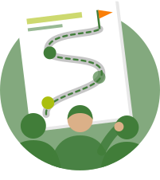

Nos services
Différentes façons de mettrela science au travail
Des visuels, des synthèses, des stratégies, des ateliers et des programmes d'apprentissage. Commencez par celui qui correspond à votre besoin.
Des solutions pour votre enjeu scientifique
Bien des projets font appel à plus d'un domaine.
-
01

Infographies et communication scientifique
Appelez-nous si vous voulez que les gens comprennent votre science d'un coup d'œil.
-
02

Synthèse des connaissances
Appelez-nous si les données existent, dispersées dans plus d'études qu'on n'a le temps d'en lire.
-
03

Conseil stratégique
Appelez-nous si le changement exige plusieurs partenaires et un plan que tous s'approprient.
-
04

Ateliers et animation
Appelez-nous s'il faut réunir des gens dans une salle ou en ligne pour arriver à un résultat commun.
-
05

Éducation et vulgarisation scientifique
Appelez-nous si votre science doit rejoindre les écoles, les communautés ou le grand public.
Vous ne savez pas de quoi vous avez besoin ?
Parlez-nous de votre enjeu. Nous vous suggérerons l'approche.